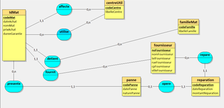
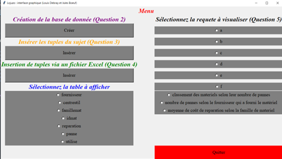

Conception et implémentation d’une base de données
Le but à atteindre pour ce projet était de pouvoir construire une base de données essayant de répondre au mieux les besoins du commanditaire. Dans ce contexte nous devions la développer pour une entreprise de menuiserie, afin de suivre les évolutions de son matériel (pannes, réparations, achats, type de matériel, utilisateurs...). La base de données finale devait être accompagnée d’une interface graphique codée en Python, permettant de visualiser le contenu des tables de la base de données, mais aussi certaines requêtes précises (comme par exemple demander à la base le total des achats de matériel pour 2021). Avant de créer la base de données, nous avons fait un schéma relationnel, montrant ce que nous voulions faire et mettant en valeurs les liens entre les différentes tables de la base de données. Ceci nous a permis de représenter graphiquement la base de données afin de vérifier si le modèle que nous avions en tête était fonctionnel. Ensuite, une fois que le schéma relationnel était fait, nous avons donc créé la base de données à partir de celui-ci. L’hébergement de la base de données s’est fait sur EasyPhp. L’interface graphique a été codée entièrement en Python, elle permet d’alimenter la base de données, la visualiser, mais aussi effectuer diverses requêtes qui sont ensuite affichées.
Compétences acquises :
- Utilisation de LoopingMCD, EasyPhp
- Approfondissement de mes connaissances en Python et SQL
- Conception d’une base de données
- Création d’une interface ergonomique et interactive pour des utilisateurs
- Interprétation des demandes et les besoins d’un commanditaire
Illustrations

Le logiciel LoopingMCD permet de créer des modèles relationnels facilement, nous pouvons voir les associations (en bleues) et les entités (en jaune) qui constituent notre base de données

Interface graphique